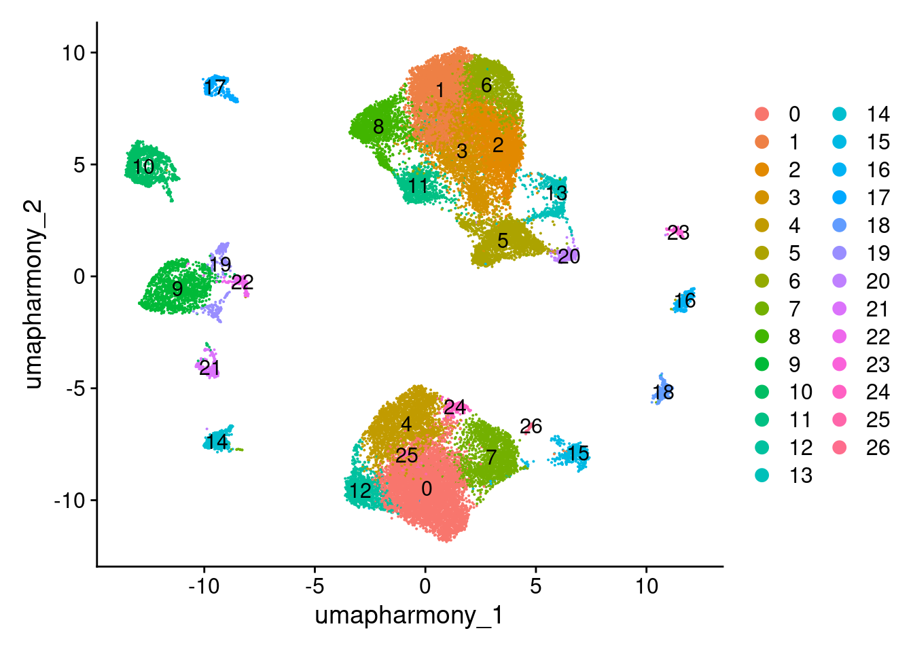
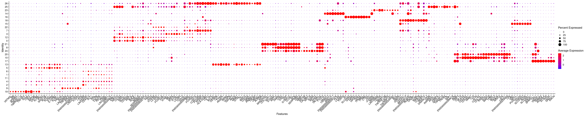
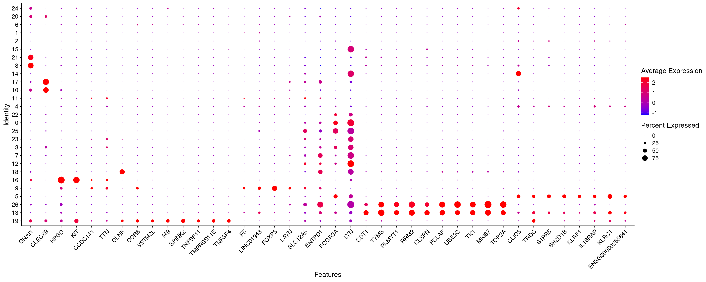

# Load libraries
library(data.table)
library(devtools)
library(presto)
library(glmGamPoi)
library(sctransform)
library(Seurat)
library(tidyverse)
library(miQC)
library(SeuratWrappers)
library(flexmix)
library(SingleCellExperiment)
library(SummarizedExperiment)
library(readxl)
library(fishpond)
library(Matrix)
library(speckle)
library(scater)
library(patchwork)
library(vctrs)
library(alevinQC)
library(harmony)
library(scDblFinder)
library(cellXY)
# Set global options for Seurat v5 objects
options(Seurat.object.assay.version = 'v5')5 Skin: Post-clustering comprehensive marker identification
5.1 Set up Seurat workspace
5.2 Load previously saved object
merged.18279.skin.singlets <- readRDS("Skin_scRNA_Part3.rds")5.3 Set idents to preferred initial clustering resolution
Idents(merged.18279.skin.singlets) <- merged.18279.skin.singlets$RNA_snn_res.0.8
merged.18279.skin.singlets$seurat_clusters <- merged.18279.skin.singlets$RNA_snn_res.0.8
DimPlot(merged.18279.skin.singlets, reduction="umap.harmony", label=TRUE)
5.4 Detect markers with FindAllMarkers
fam <- FindAllMarkers(merged.18279.skin.singlets,
assay="RNA",
slot="data",
only.pos = TRUE,
logfc.threshold = 0.25)Calculating cluster 0Calculating cluster 1Calculating cluster 2Calculating cluster 3Calculating cluster 4Calculating cluster 5Calculating cluster 6Calculating cluster 7Calculating cluster 8Calculating cluster 9Calculating cluster 10Calculating cluster 11Calculating cluster 12Calculating cluster 13Calculating cluster 14Calculating cluster 15Calculating cluster 16Calculating cluster 17Calculating cluster 18Calculating cluster 19Calculating cluster 20Calculating cluster 21Calculating cluster 22Calculating cluster 23Calculating cluster 24Calculating cluster 25Calculating cluster 26head(fam) p_val avg_log2FC pct.1 pct.2 p_val_adj cluster gene
S100A9 0 3.947323 0.903 0.128 0 0 S100A9
C5AR1 0 3.550186 0.899 0.133 0 0 C5AR1
APOBEC3A 0 4.316191 0.874 0.118 0 0 APOBEC3A
SERPINA1 0 3.727691 0.879 0.123 0 0 SERPINA1
C15orf48 0 3.421388 0.893 0.149 0 0 C15orf48
IL1RN 0 3.766486 0.946 0.202 0 0 IL1RN5.5 Plot top markers per cluster as dotplot
fam_top <- fam %>%
mutate(diff = pct.1 - pct.2) %>%
dplyr::filter(pct.1 > 0.25 & diff > 0.1 & pct.2 < 0.1 & p_val_adj < 0.01) %>%
group_by(cluster) %>%
slice_head(n=10) %>%
pull(gene) %>%
unique()
# Compute aggregated expression values of these genes and cluster them to order the figure
rna <- AverageExpression(merged.18279.skin.singlets,assay="RNA",slot="data")As of Seurat v5, we recommend using AggregateExpression to perform pseudo-bulk analysis.
First group.by variable `ident` starts with a number, appending `g` to ensure valid variable names
This message is displayed once per session.rna.sub <- rna$RNA[fam_top,]
cors.genes <- as.dist(1-cor(as.matrix(t(rna.sub)),method="pearson"))
hc.genes <- hclust(cors.genes)
fam_top.sorted <- rownames(rna.sub)[hc.genes$order]
# Plot
DotPlot(merged.18279.skin.singlets,
features = fam_top.sorted,
assay = "RNA",
cols=c("blue","red"),
cluster.idents=T) +
RotatedAxis()
5.6 Subset to T/NK lineage and compute markers just among these clusters
merged.18279.skin.singlets.tnk <- subset(merged.18279.skin.singlets,
subset = seurat_clusters %in% c(1,2,4,5,6,9,11,13,19))
fam.tnk <- FindAllMarkers(merged.18279.skin.singlets.tnk,
assay="RNA",
slot="data",
only.pos = T,
logfc.threshold = 0.25)Calculating cluster 1Calculating cluster 2Calculating cluster 4Calculating cluster 5Calculating cluster 6Calculating cluster 9Calculating cluster 11Calculating cluster 13Calculating cluster 19head(fam.tnk) p_val avg_log2FC pct.1 pct.2 p_val_adj cluster gene
SARAF 0.000000e+00 0.6876639 0.989 0.931 0.000000e+00 1 SARAF
RPL11 0.000000e+00 0.5362517 0.999 0.948 0.000000e+00 1 RPL11
FTH1 0.000000e+00 1.1015748 0.999 0.972 0.000000e+00 1 FTH1
RPS12 2.889844e-278 0.5044729 0.998 0.952 1.769076e-273 1 RPS12
RPL30 1.325629e-276 0.5088433 0.996 0.939 8.115101e-272 1 RPL30
RPL10 3.401911e-264 0.4538185 1.000 0.969 2.082548e-259 1 RPL105.7 Plot top markers per cluster as dotplot
fam.tnk_top <- fam.tnk %>%
mutate(diff = pct.1 - pct.2) %>%
dplyr::filter(pct.1 > 0.25 & diff > 0.1 & pct.2 < 0.1 & p_val_adj < 0.01) %>%
group_by(cluster) %>%
slice_head(n=10) %>%
pull(gene) %>%
unique()
# Compute aggregated expression values of these genes and cluster them to order the figure
rna <- AverageExpression(merged.18279.skin.singlets,assay="RNA",slot="data")
rna.sub <- rna$RNA[fam.tnk_top,]
cors.genes <- as.dist(1-cor(as.matrix(t(rna.sub)),method="pearson"))
hc.genes <- hclust(cors.genes)
fam.tnk_top.sorted <- rownames(rna.sub)[hc.genes$order]
# Plot
DotPlot(merged.18279.skin.singlets,
features = fam.tnk_top.sorted,
assay = "RNA",
cols=c("blue","red"),
cluster.idents=T) +
RotatedAxis()
5.8 Get sessionInfo
sessionInfo()R version 4.3.1 (2023-06-16)
Platform: x86_64-pc-linux-gnu (64-bit)
Running under: Rocky Linux 8.10 (Green Obsidian)
Matrix products: default
BLAS/LAPACK: /usr/lib64/libopenblasp-r0.3.15.so; LAPACK version 3.9.0
locale:
[1] LC_CTYPE=en_US.UTF-8 LC_NUMERIC=C
[3] LC_TIME=en_US.UTF-8 LC_COLLATE=en_US.UTF-8
[5] LC_MONETARY=en_US.UTF-8 LC_MESSAGES=en_US.UTF-8
[7] LC_PAPER=en_US.UTF-8 LC_NAME=C
[9] LC_ADDRESS=C LC_TELEPHONE=C
[11] LC_MEASUREMENT=en_US.UTF-8 LC_IDENTIFICATION=C
time zone: America/New_York
tzcode source: system (glibc)
attached base packages:
[1] stats4 stats graphics grDevices utils datasets methods
[8] base
other attached packages:
[1] cellXY_0.99.0 scDblFinder_1.14.0
[3] harmony_1.2.0 alevinQC_1.16.1
[5] vctrs_0.6.5 patchwork_1.3.0
[7] scater_1.28.0 scuttle_1.10.3
[9] speckle_1.0.0 Matrix_1.6-4
[11] fishpond_2.6.2 readxl_1.4.3
[13] SingleCellExperiment_1.22.0 SummarizedExperiment_1.30.2
[15] Biobase_2.60.0 GenomicRanges_1.52.1
[17] GenomeInfoDb_1.36.4 IRanges_2.34.1
[19] S4Vectors_0.38.2 BiocGenerics_0.46.0
[21] MatrixGenerics_1.12.3 matrixStats_1.2.0
[23] flexmix_2.3-19 lattice_0.22-5
[25] SeuratWrappers_0.3.19 miQC_1.8.0
[27] lubridate_1.9.3 forcats_1.0.0
[29] stringr_1.5.1 dplyr_1.1.4
[31] purrr_1.0.2 readr_2.1.5
[33] tidyr_1.3.1 tibble_3.2.1
[35] ggplot2_3.4.4 tidyverse_2.0.0
[37] Seurat_5.1.0 SeuratObject_5.0.2
[39] sp_2.1-3 sctransform_0.4.1
[41] glmGamPoi_1.12.2 presto_1.0.0
[43] Rcpp_1.0.12 devtools_2.4.5
[45] usethis_2.2.2 data.table_1.15.0
loaded via a namespace (and not attached):
[1] fs_1.6.3 spatstat.sparse_3.0-3
[3] bitops_1.0-7 httr_1.4.7
[5] RColorBrewer_1.1-3 profvis_0.3.8
[7] tools_4.3.1 utf8_1.2.4
[9] R6_2.5.1 DT_0.31
[11] lazyeval_0.2.2 uwot_0.1.16
[13] urlchecker_1.0.1 withr_3.0.0
[15] GGally_2.2.1 gridExtra_2.3
[17] progressr_0.14.0 cli_3.6.2
[19] spatstat.explore_3.2-6 fastDummies_1.7.3
[21] labeling_0.4.3 spatstat.data_3.0-4
[23] ggridges_0.5.6 pbapply_1.7-2
[25] Rsamtools_2.16.0 R.utils_2.12.3
[27] parallelly_1.37.0 sessioninfo_1.2.2
[29] limma_3.56.2 RSQLite_2.3.5
[31] BiocIO_1.10.0 generics_0.1.3
[33] gtools_3.9.5 ica_1.0-3
[35] spatstat.random_3.2-2 ggbeeswarm_0.7.2
[37] fansi_1.0.6 abind_1.4-5
[39] R.methodsS3_1.8.2 lifecycle_1.0.4
[41] yaml_2.3.8 edgeR_3.42.4
[43] Rtsne_0.17 blob_1.2.4
[45] grid_4.3.1 dqrng_0.3.2
[47] promises_1.2.1 crayon_1.5.2
[49] shinydashboard_0.7.2 miniUI_0.1.1.1
[51] beachmat_2.16.0 cowplot_1.1.3
[53] KEGGREST_1.40.1 metapod_1.8.0
[55] pillar_1.9.0 knitr_1.45
[57] rjson_0.2.21 xgboost_1.7.7.1
[59] future.apply_1.11.1 codetools_0.2-19
[61] leiden_0.4.3.1 glue_1.7.0
[63] remotes_2.4.2.1 png_0.1-8
[65] spam_2.10-0 org.Mm.eg.db_3.18.0
[67] cellranger_1.1.0 gtable_0.3.4
[69] cachem_1.0.8 xfun_0.42
[71] S4Arrays_1.2.0 mime_0.12
[73] survival_3.5-8 statmod_1.5.0
[75] bluster_1.10.0 ellipsis_0.3.2
[77] fitdistrplus_1.1-11 ROCR_1.0-11
[79] nlme_3.1-164 bit64_4.0.5
[81] RcppAnnoy_0.0.22 irlba_2.3.5.1
[83] vipor_0.4.7 KernSmooth_2.23-22
[85] DBI_1.2.2 colorspace_2.1-0
[87] nnet_7.3-19 tidyselect_1.2.0
[89] bit_4.0.5 compiler_4.3.1
[91] BiocNeighbors_1.18.0 DelayedArray_0.26.7
[93] plotly_4.10.4 rtracklayer_1.60.1
[95] scales_1.3.0 lmtest_0.9-40
[97] digest_0.6.34 goftest_1.2-3
[99] spatstat.utils_3.0-4 rmarkdown_2.25
[101] XVector_0.40.0 htmltools_0.5.7
[103] pkgconfig_2.0.3 sparseMatrixStats_1.12.2
[105] fastmap_1.1.1 rlang_1.1.3
[107] htmlwidgets_1.6.4 shiny_1.8.0
[109] DelayedMatrixStats_1.22.6 farver_2.1.1
[111] zoo_1.8-12 jsonlite_1.8.8
[113] BiocParallel_1.34.2 R.oo_1.26.0
[115] BiocSingular_1.16.0 RCurl_1.98-1.14
[117] magrittr_2.0.3 modeltools_0.2-23
[119] GenomeInfoDbData_1.2.10 dotCall64_1.1-1
[121] munsell_0.5.0 viridis_0.6.5
[123] reticulate_1.35.0 stringi_1.8.3
[125] zlibbioc_1.46.0 MASS_7.3-60.0.1
[127] org.Hs.eg.db_3.18.0 plyr_1.8.9
[129] pkgbuild_1.4.3 ggstats_0.5.1
[131] parallel_4.3.1 listenv_0.9.1
[133] ggrepel_0.9.5 deldir_2.0-2
[135] Biostrings_2.68.1 splines_4.3.1
[137] tensor_1.5 hms_1.1.3
[139] locfit_1.5-9.8 igraph_2.0.2
[141] spatstat.geom_3.2-8 RcppHNSW_0.6.0
[143] reshape2_1.4.4 ScaledMatrix_1.8.1
[145] pkgload_1.3.4 XML_3.99-0.16.1
[147] evaluate_0.23 scran_1.28.2
[149] BiocManager_1.30.22 tzdb_0.4.0
[151] httpuv_1.6.14 RANN_2.6.1
[153] polyclip_1.10-6 future_1.33.1
[155] scattermore_1.2 rsvd_1.0.5
[157] xtable_1.8-4 restfulr_0.0.15
[159] svMisc_1.2.3 RSpectra_0.16-1
[161] later_1.3.2 viridisLite_0.4.2
[163] AnnotationDbi_1.64.1 GenomicAlignments_1.36.0
[165] memoise_2.0.1 beeswarm_0.4.0
[167] tximport_1.28.0 cluster_2.1.6
[169] timechange_0.3.0 globals_0.16.2